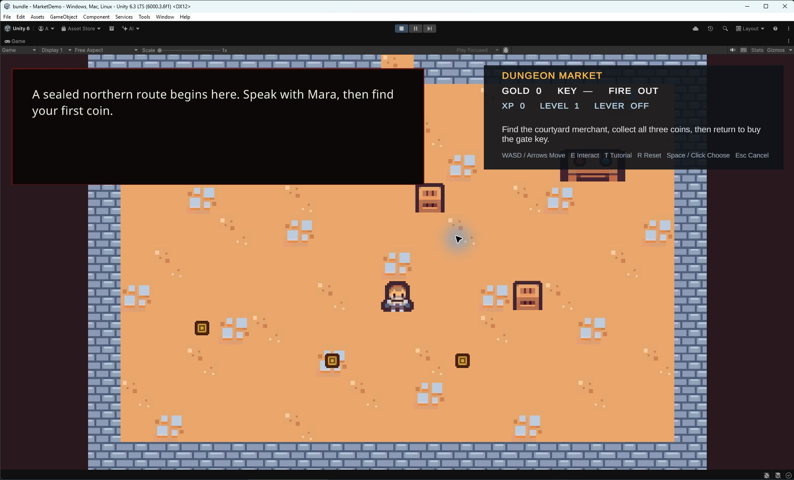

Runtime UI Setup
Use the supplied manager prefab first. Replace UI bindings only when you need a different layout, and keep the required controller references explicit.
Recommended: start from the supplied prefab
- Drag
Assets/DialogGraphSystem/Resources/Prefabs/DialogueManager.prefabinto the scene. - Confirm its Dialog Manager component has a
DialogUIManagerassigned and that the UI manager can resolve its default controller. - Register a graph and ID in Dialog Graphs, then start it with a button or script.
The prefab provides the safest starting point because its manager/UI references are already wired. Avoid adding a second manager or a second overlapping UI unless you have deliberately designed that scene arrangement.
See the Dialog Manager Inspector reference for registry and scene-reference fields.
Custom controller bindings
Use the Runtime UI Settings Inspector reference for optional panel and control settings.
A DialogUIController binds the visible objects used during playback. In the controller component, assign the references that match your hierarchy:
panelRoot— root object shown or hidden for the dialogue panel.speakerNameanddialogText— TextMeshProUGUI fields for the speaker and current line.portraitImage— optional Image for a character portrait.choicesContainerandchoiceButtonPrefab— parent and button prefab for available answers. The prefab root should provide a Button andChoiceButtonView; use a vertical layout for the answer list.skipButtonandskipLineButton— optional controls for skipping a choice wait or advancing a line, according to the configured feature.historyPanelButton,settingsPanelButton,autoPlayButton, andlanguageButton— optional controls when those panels/features are present in your UI.
Use the supplied DialogUIManager and controller prefab as a reference for the expected hierarchy. Custom panels should remain active in the scene hierarchy for their references to resolve; visibility is managed by the UI controller.

Check the bindings in Play mode
- Start a registered graph with a Dialog line, a speaker name, and at least one Choice answer.
- Confirm the panel opens, speaker and line text are readable, and the answer button appears in the expected container.
- Select an answer and verify the graph follows the matching answer connection.
- If using optional portrait, history, settings, auto-play, or language controls, test each one in the actual scene.
Expected result: the panel displays each line and the player can select visible responses. Project Health diagnostics do not prove that your custom hierarchy is correctly bound or legible at runtime.
Troubleshooting
- No panel appears: verify the scene uses the supplied manager prefab or has a correctly assigned
DialogUIManager. - Text does not change: check the two TMP references and import TMP Essential Resources if Unity requests them.
- Choices are missing: check
choicesContainer, the choice button prefab, and that the graph reaches a Choice node. - Buttons look wrong or do not respond: check that the prefab root contains a Button and
ChoiceButtonView, and that no overlay blocks pointer input. - Optional button is null: leave a feature unbound only when you do not need it; otherwise assign a real button in the active controller hierarchy.